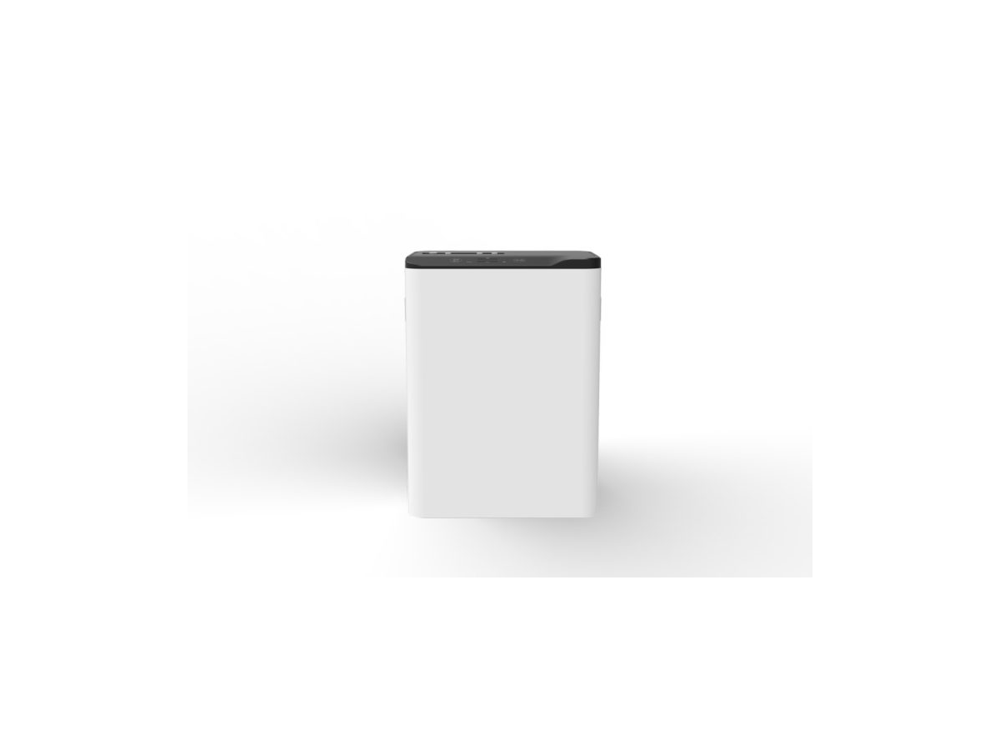
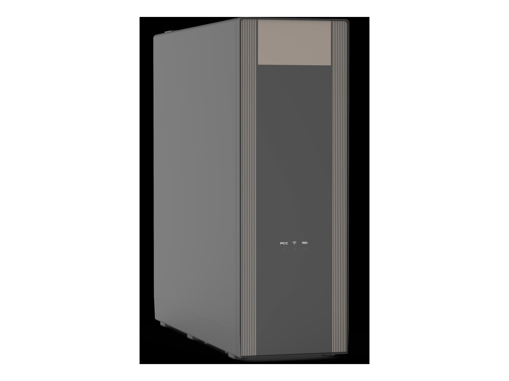
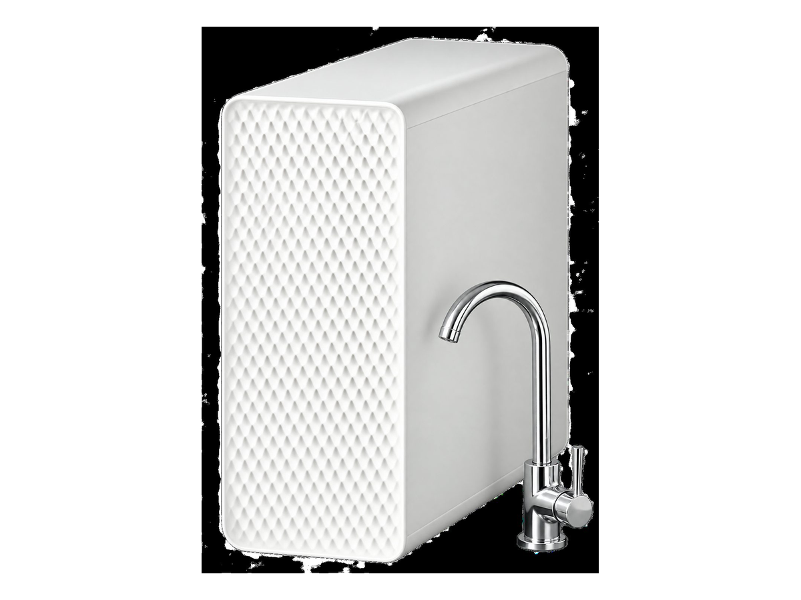
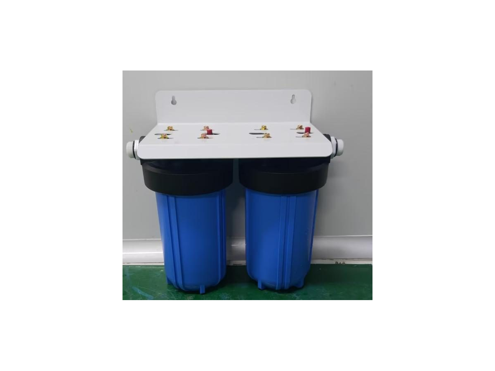

Under-Sink
Under-SinkWT-UR13
800 GPD under-sink RO purifier
SKU: WT-UR13
MOQ: Confirm on enquiry
Home / Products / Under-Sink RO Systems
Under-sink RO purifiers and companions for kitchen use, supplied as OEM / ODM models for brand owners and distributors.
17 models. Specifications are confirmed per model and order.
Under-Sink800 GPD under-sink RO purifier
SKU: WT-UR13
MOQ: Confirm on enquiry
Under-sink RO with storage heating
SKU: WT-UR14
MOQ: Confirm on enquiry
 Under-Sink
Under-SinkHigh-capacity front-access RO purifier
SKU: WT-UR15
MOQ: Confirm on enquiry
 Under-Sink
Under-SinkCompact front-access RO purifier
SKU: WT-UR16
MOQ: Confirm on enquiry
 Under-Sink
Under-SinkThree-cartridge RO purifier
SKU: WT-UR17
MOQ: Confirm on enquiry
Tool-free pull-out cartridge RO system
SKU: WT-UR01
MOQ: Confirm on enquiry
Dual-drive extended-output RO system
SKU: WT-UR12
MOQ: Confirm on enquiry
Compact two-cartridge RO purifier
SKU: WT-UR19
MOQ: Confirm on enquiry

Under-SinkThree-cartridge high-flow RO purifier
SKU: WT-UR23
MOQ: Confirm on enquiry
Slim dual-outlet RO purifier
SKU: WT-UR24
MOQ: Confirm on enquiry
 Under-Sink
Under-SinkUnder-sink hydrogen-water RO purifier
SKU: WT-UR05
MOQ: Confirm on enquiry

Under-SinkRO with instant-hot faucet and chilled
SKU: WT-UR02
MOQ: Confirm on enquiry
 Under-Sink
Under-SinkHigh-capacity household RO purifier
SKU: WT-UR04
MOQ: Confirm on enquiry

Under-SinkCompact two-cartridge RO platform
SKU: WT-UR06
MOQ: Confirm on enquiry
Under-sink cooling companion
SKU: WT-UR25
MOQ: Confirm on enquiry
Stainless-steel instant-heating faucet
SKU: WT-UR26
MOQ: Confirm on enquiry

Under-SinkTwin-housing high-flow pre-filter
SKU: WT-UR27
MOQ: Confirm on enquiry